Diagnosing Biased Inference with Divergences
Michael Betancourt
January 2017
Markov chain Monte Carlo (MCMC) approximates expectations with respect to a given target distribution, \[ \mathbb{E}_{\pi} [ f ] = \int \mathrm{d}q \, \pi (q) \, f(q), \] using the states of a Markov chain, \(\{q_{0}, \ldots, q_{N} \}\), \[ \mathbb{E}_{\pi} [ f ] \approx \hat{f}_{N} = \frac{1}{N + 1} \sum_{n = 0}^{N} f(q_{n}). \] These estimators, however, are guaranteed to be accurate only asymptotically as the chain grows to be infinitely long, \[ \lim_{N \rightarrow \infty} \hat{f}_{N} = \mathbb{E}_{\pi} [ f ]. \]
To be useful in applied analyses, we need MCMC estimators to converge to the true expectation values sufficiently quickly that they are reasonably accurate before we exhaust our finite computational resources. This fast convergence requires strong ergodicity conditions to hold, in particular geometric ergodicity between a Markov transition and a target distribution. Geometric ergodicity is usually the necessary condition for MCMC estimators to follow a central limit theorem, which ensures not only that they are unbiased even after only a finite number of iterations but also that we can empirically quantify their precision using the MCMC standard error.
Unfortunately, proving geometric ergodicity theoretically is infeasible for any nontrivial problem. Instead we must rely on empirical diagnostics that identify obstructions to geometric ergodicity, and hence well-behaved MCMC estimators. For a general Markov transition and target distribution, the best known diagnostic is the split \(\hat{R}\) statistic over an ensemble of Markov chains initialized from diffuse points in parameter space; to do any better we need to exploit the particular structure of a given transition or target distribution.
Hamiltonian Monte Carlo, for example, is especially powerful in this regard as its failures to be geometrically ergodic with respect to any target distribution manifest in distinct behaviors that have been developed into sensitive diagnostics. One of these behaviors is the appearance of divergences that indicate the Hamiltonian Markov chain has encountered regions of high curvature in the target distribution which it cannot adequately explore.
In this case study I will show how divergences signal bias in the fitting of hierarchical models and how they can be used to study the underlying pathologies. I will also show how those pathologies can be mitigated by utilizing an alternative implementation of the same model.
The Eight Schools Model
Let’s consider a hierarchical model of the the Eight Schools dataset (Rubin 1981),
\[\mu \sim \mathcal{N}(0, 5)\]
\[\tau \sim \text{Half-Cauchy}(0, 5)\]
\[\theta_{n} \sim \mathcal{N}(\mu, \tau)\]
\[y_{n} \sim \mathcal{N}(\theta_{n}, \sigma_{n}),\]
where \(n \in \left\{1, \ldots, 8 \right\}\) and the \(\left\{ y_{n}, \sigma_{n} \right\}\) are given as data.
Inferring the hierarchical hyperparameters, \(\mu\) and \(\sigma\), together with the group-level parameters, \(\theta_{1}, \ldots, \theta_{8}\), allows the model to pool data across the groups and reduce their posterior variance. Unfortunately this pooling also squeezes the posterior distribution into a particularly challenging geometry that obstructs geometric ergodicity and hence biases MCMC estimation.
In this case study we’ll first examine the direct centered parameterization of the Eight Schools model and see how divergences identify this bias before there are any other indications of problems. We’ll then use these divergences to study the source of the bias and motivate the necessary fix, a reimplementation of the model with a non-centered parameterization. For a more thorough discussion of the geometry of centered and non-centered parameterizations of hierarchical models see Betancourt and Girolami (2015).
A Centered Eight Schools Implementation
A centered parameterization of the Eight Schools model is straightforward to directly implement as a Stan program,
writeLines(readLines("eight_schools_cp.stan"))data {
int<lower=0> J;
real y[J];
real<lower=0> sigma[J];
}
parameters {
real mu;
real<lower=0> tau;
real theta[J];
}
model {
mu ~ normal(0, 5);
tau ~ cauchy(0, 5);
theta ~ normal(mu, tau);
y ~ normal(theta, sigma);
}Unfortunately, this direct implementation of the model exhibits a pathological geometry that frustrates geometric ergodicity. Even more worrisome, the resulting bias is subtle and may not be obvious upon inspection of the Markov chain alone. To understand this bias, let’s consider first a short Markov chain, commonly used when computational expediency is a motivating factor, and only afterwards a longer Markov chain.
A Dangerously-Short Markov Chain
We begin by setting up our R environment,
library(rstan)
rstan_options(auto_write = TRUE)and then some graphic customizations that we’ll use later,
c_light <- c("#DCBCBC")
c_light_highlight <- c("#C79999")
c_mid <- c("#B97C7C")
c_mid_highlight <- c("#A25050")
c_dark <- c("#8F2727")
c_dark_highlight <- c("#7C0000")Against the best practices preached by the Stan development team, let’s fit the model in RStan using just a single short chain,
input_data <- read_rdump("eight_schools.data.R")
fit_cp <- stan(file='eight_schools_cp.stan', data=input_data,
iter=1200, warmup=500, chains=1, seed=483892929, refresh=1200)
SAMPLING FOR MODEL 'eight_schools_cp' NOW (CHAIN 1).
Chain 1, Iteration: 1 / 1200 [ 0%] (Warmup)
Chain 1, Iteration: 501 / 1200 [ 41%] (Sampling)
Chain 1, Iteration: 1200 / 1200 [100%] (Sampling)
Elapsed Time: 0.054132 seconds (Warm-up)
0.048684 seconds (Sampling)
0.102816 seconds (Total)Although this scenario may appear superficial, it is not uncommon for users to use short chains when prototyping their analysis, or even for their final analysis if they are limited by time or computational resources.
For this lone chain split \(\hat{R}\) doesn’t indicate any problems and the effective sample size per iteration is reasonable,
print(fit_cp)Inference for Stan model: eight_schools_cp.
1 chains, each with iter=1200; warmup=500; thin=1;
post-warmup draws per chain=700, total post-warmup draws=700.
mean se_mean sd 2.5% 25% 50% 75% 97.5% n_eff Rhat
mu 4.29 0.26 3.29 -2.99 2.06 4.53 6.33 10.86 165 1.00
tau 4.50 0.37 3.09 0.89 2.27 3.54 5.94 13.05 70 1.01
theta[1] 6.60 0.34 5.73 -3.59 2.95 6.21 9.52 19.25 281 1.00
theta[2] 5.28 0.31 4.90 -4.72 2.50 5.44 7.83 15.27 249 1.01
theta[3] 3.83 0.33 5.77 -10.62 0.91 4.29 7.16 14.36 311 1.00
theta[4] 4.99 0.30 5.25 -5.53 1.98 4.96 8.28 15.13 302 1.00
theta[5] 3.37 0.37 5.13 -7.39 0.22 4.00 6.36 13.44 192 1.00
theta[6] 3.77 0.36 5.02 -7.33 0.99 4.08 6.90 12.81 200 1.00
theta[7] 6.87 0.38 5.51 -3.17 3.28 6.09 9.60 20.43 206 1.01
theta[8] 4.68 0.28 5.25 -6.01 1.80 4.81 7.36 15.53 341 1.00
lp__ -16.77 0.83 5.42 -26.88 -20.65 -16.91 -13.14 -5.12 43 1.02
Samples were drawn using NUTS(diag_e) at Thu Mar 2 15:24:17 2017.
For each parameter, n_eff is a crude measure of effective sample size,
and Rhat is the potential scale reduction factor on split chains (at
convergence, Rhat=1).Moreover, the trace plots all look fine. Let’s consider, for example, the hierarchical standard deviation, \(\tau\) or, more specifically, its logarithm, \(\log \tau\). Because \(\tau\) is constrained to be positive, its logarithm will allow us to better resolve behavior for small values. Indeed the chains seems to be exploring both small and large values reasonably well,
params_cp <- as.data.frame(extract(fit_cp, permuted=FALSE))
names(params_cp) <- gsub("chain:1.", "", names(params_cp), fixed = TRUE)
names(params_cp) <- gsub("[", ".", names(params_cp), fixed = TRUE)
names(params_cp) <- gsub("]", "", names(params_cp), fixed = TRUE)
params_cp$iter <- 1:700
par(mar = c(4, 4, 0.5, 0.5))
plot(params_cp$iter, log(params_cp$tau), col=c_dark, pch=16, cex=0.8,
xlab="Iteration", ylab="log(tau)", ylim=c(-6, 4))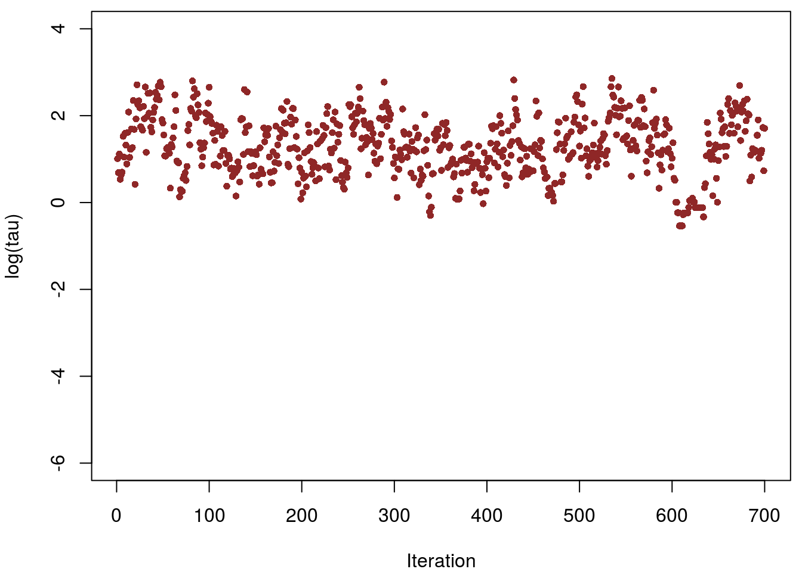
Unfortunately, the resulting estimate for the mean of \(log(\tau)\) is strongly biased away from the true value, here shown in grey,
running_means <- sapply(params_cp$iter, function(n) mean(log(params_cp$tau)[1:n]))
par(mar = c(4, 4, 0.5, 0.5))
plot(params_cp$iter, running_means, col=c_dark, pch=16, cex=0.8, ylim=c(0, 2),
xlab="Iteration", ylab="MCMC mean of log(tau)")
abline(h=0.7657852, col="grey", lty="dashed", lwd=3)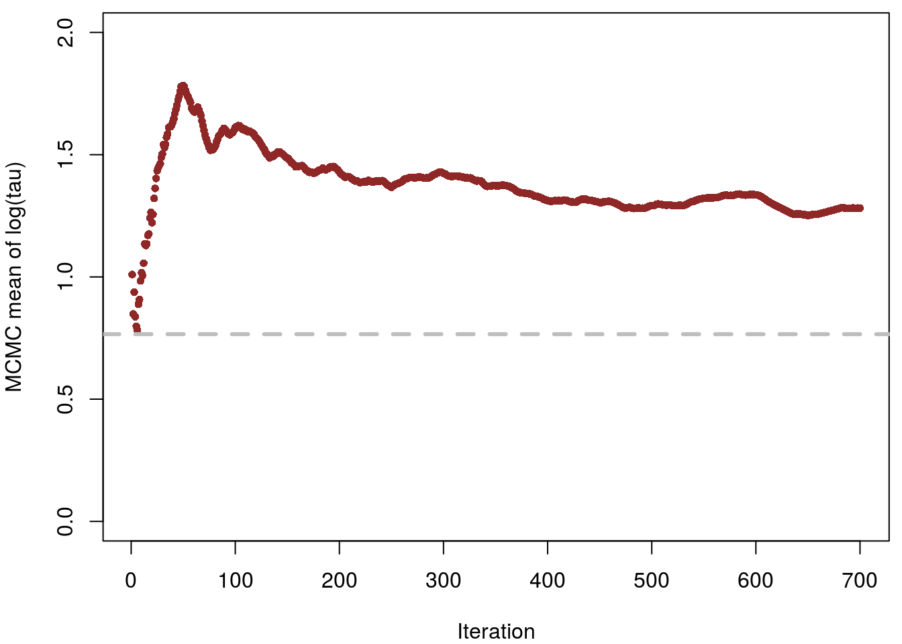
Hamiltonian Monte Carlo, however, is not so oblivious to these issues as almost 2% of the iterations in our lone Markov chain ended with a divergence,
divergent <- get_sampler_params(fit_cp, inc_warmup=FALSE)[[1]][,'divergent__']
sum(divergent)[1] 12sum(divergent) / 700[1] 0.01714286Even with a single short chain these divergences are able to identity the bias and advise skepticism of any resulting MCMC estimators.
Additionally, because the divergent transitions, here shown here in green, tend to be located near the pathologies we can use them to identify the location of the problematic neighborhoods in parameter space,
params_cp$divergent <- divergent
div_params_cp <- params_cp[params_cp$divergent == 1,]
nondiv_params_cp <- params_cp[params_cp$divergent == 0,]
par(mar = c(4, 4, 0.5, 0.5))
plot(nondiv_params_cp$theta.1, log(nondiv_params_cp$tau),
col=c_dark, pch=16, cex=0.8, xlab="theta.1", ylab="log(tau)",
xlim=c(-20, 50), ylim=c(-6,4))
points(div_params_cp$theta.1, log(div_params_cp$tau),
col="green", pch=16, cex=0.8)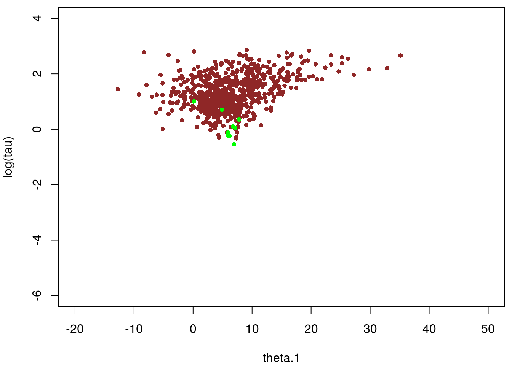
In this case the divergences are clustering at small values of \(\tau\) where the hierarchical distribution, and hence all of the group-level \(\theta_{n}\), are squeezed together. Eventually this squeezing would yield the funnel geometry infamous to hierarchical models, but here it appears that the Hamiltonian Markov chain is diverging before it can fully explore the neck of the funnel.
A Safer, Longer Markov Chain
Aware of the potential insensitivity of split \(\hat{R}\) on single short chains, we recommend always running multiple chains as long as possible to have the best chance to observe any obstructions to geometric ergodicity. Because it is not always possible to run long chains for complex models, however, divergences are an incredibly powerful diagnostic for biased MCMC estimation.
With divergences already indicating a problem for our centered implementation of the Eight Schools model, let’s run a much longer chain to see how the problems more obviously manifest,
fit_cp80 <- stan(file='eight_schools_cp.stan', data=input_data,
iter=11000, warmup=1000, chains=1, seed=483892929,
refresh=11000)
SAMPLING FOR MODEL 'eight_schools_cp' NOW (CHAIN 1).
Chain 1, Iteration: 1 / 11000 [ 0%] (Warmup)
Chain 1, Iteration: 1001 / 11000 [ 9%] (Sampling)
Chain 1, Iteration: 11000 / 11000 [100%] (Sampling)
Elapsed Time: 0.09754 seconds (Warm-up)
0.534603 seconds (Sampling)
0.632143 seconds (Total)Even with so many more iterations, split \(\hat{R}\) does not indicate any serious issues,
print(fit_cp80)Inference for Stan model: eight_schools_cp.
1 chains, each with iter=11000; warmup=1000; thin=1;
post-warmup draws per chain=10000, total post-warmup draws=10000.
mean se_mean sd 2.5% 25% 50% 75% 97.5% n_eff Rhat
mu 4.36 0.12 3.40 -2.31 2.19 4.39 6.76 10.98 799 1
tau 3.82 0.17 3.26 0.67 1.51 2.91 5.06 12.28 376 1
theta[1] 6.23 0.17 5.62 -3.15 2.54 5.64 8.99 19.59 1136 1
theta[2] 4.93 0.13 4.77 -4.52 2.12 4.78 7.87 14.68 1315 1
theta[3] 3.86 0.13 5.37 -8.12 0.86 4.00 7.16 13.68 1644 1
theta[4] 4.72 0.14 4.94 -5.18 1.73 4.62 7.71 14.43 1327 1
theta[5] 3.55 0.13 4.81 -6.97 0.80 3.65 6.76 12.18 1302 1
theta[6] 3.96 0.13 4.88 -6.40 1.16 3.94 6.97 13.22 1524 1
theta[7] 6.37 0.17 5.28 -2.58 2.81 5.92 9.14 18.79 1007 1
theta[8] 4.82 0.12 5.33 -5.63 1.79 4.72 7.80 15.77 1961 1
lp__ -14.94 0.47 6.14 -26.56 -19.39 -15.07 -10.27 -3.98 170 1
Samples were drawn using NUTS(diag_e) at Thu Mar 2 15:24:18 2017.
For each parameter, n_eff is a crude measure of effective sample size,
and Rhat is the potential scale reduction factor on split chains (at
convergence, Rhat=1).We really need to be incorporating multiple chains for split \(\hat{R}\) to be effective. Still, note that the effective sample size per iteration has drastically fallen, indicating that we are exploring less efficiently the longer we run. This odd behavior is a clear sign that something problematic is afoot.
The trace plots are more indicative of the underlying pathologies, showing the chain occasionally “sticking” as it approaches small values of \(\tau\), exactly where we saw the divergences concentrating,
params_cp80 <- as.data.frame(extract(fit_cp80, permuted=FALSE))
names(params_cp80) <- gsub("chain:1.", "", names(params_cp80), fixed = TRUE)
names(params_cp80) <- gsub("[", ".", names(params_cp80), fixed = TRUE)
names(params_cp80) <- gsub("]", "", names(params_cp80), fixed = TRUE)
params_cp80$iter <- 1:10000
par(mar = c(4, 4, 0.5, 0.5))
plot(params_cp80$iter, log(params_cp80$tau), col=c_dark, pch=16, cex=0.8,
xlab="Iteration", ylab="log(tau)", ylim=c(-6, 4))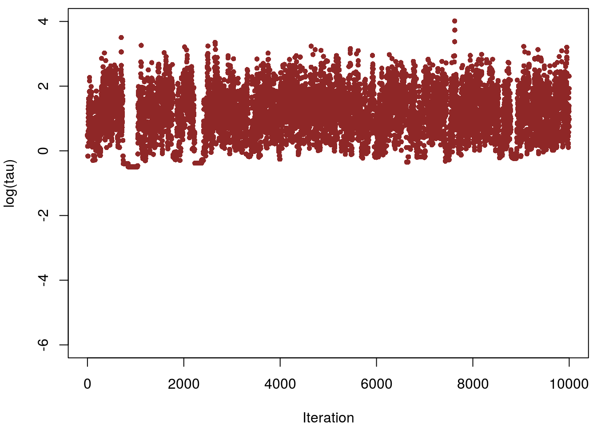
These sticky intervals induce severe oscillations in the MCMC estimators early on, until they seem to finally settle into biased values,
running_means_cp80 <- sapply(1:1000, function(n) mean(log(params_cp80$tau)[1:(10*n)]))
par(mar = c(4, 4, 0.5, 0.5))
plot(10*(1:1000), running_means_cp80, col=c_dark, pch=16, cex=0.8, ylim=c(0, 2),
xlab="Iteration", ylab="MCMC mean of log(tau)")
abline(h=0.7657852, col="grey", lty="dashed", lwd=3)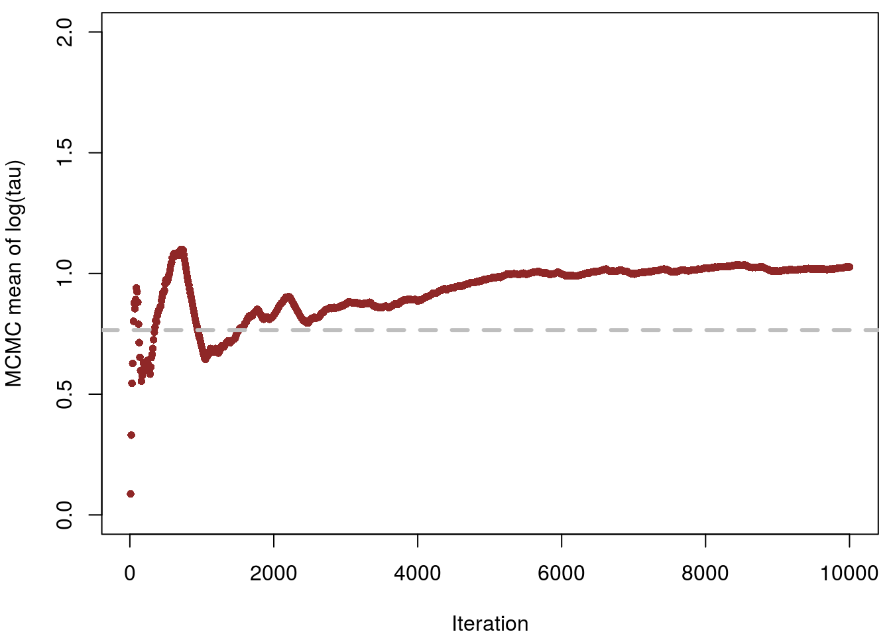
In fact the sticky intervals are the Markov chain trying to correct the biased exploration. If we ran the chain even longer then it would eventually get stuck again and drag the MCMC estimator down towards the true value. Given an infinite number of iterations this delicate balance asymptotes to the true expectation as we’d expect given the consistency guarantee of MCMC. Stopping the after any finite number of iterations, however, destroys this balance and leaves us with a significant bias.
The rate of divergences remains near 2% of all iterations,
divergent <- get_sampler_params(fit_cp80, inc_warmup=FALSE)[[1]][,'divergent__']
sum(divergent)[1] 299sum(divergent) / 10000[1] 0.0299and the increased sampling really allows us to see the truncated funnel geometry of the Markov chain,
params_cp80$divergent <- divergent
div_params_cp <- params_cp80[params_cp80$divergent == 1,]
nondiv_params_cp <- params_cp80[params_cp80$divergent == 0,]
par(mar = c(4, 4, 0.5, 0.5))
plot(nondiv_params_cp$theta.1, log(nondiv_params_cp$tau),
col=c_dark, pch=16, cex=0.8, xlab="theta.1", ylab="log(tau)",
xlim=c(-20, 50), ylim=c(-6,4))
points(div_params_cp$theta.1, log(div_params_cp$tau),
col="green", pch=16, cex=0.8)
Mitigating Divergences by Adjusting Stan’s Adaptation Routine
Divergences in Hamiltonian Monte Carlo arise when the Hamiltonian transition encounters regions of extremely large curvature, such as the opening of the hierarchical funnel. Unable to accurate resolve these regions, the transition malfunctions and flies off towards infinity. With the transitions unable to completely explore these regions of extreme curvature, we lose geometric ergodicity and our MCMC estimators become biased.
Stan uses a heuristic to quickly identify these misbehaving trajectories, and hence label divergences, without having to wait for them to run all the way to infinity. This heuristic can be a bit aggressive, however, and sometimes label transitions as divergent even when we have not lost geometric ergodicity.
To resolve this potential ambiguity we can adjust the step size, \(\epsilon\), of the Hamiltonian transition. The smaller the step size the more accurate the trajectory and the less likely it will be mislabeled as a divergence. In other words, if we have geometric ergodicity between the Hamiltonian transition and the target distribution then decreasing the step size will reduce and then ultimately remove the divergences entirely. If we do not have geometric ergodicity, however, then decreasing the step size will not completely remove the divergences.
Within Stan the step size is tuned automatically during warm up, but we can coerce smaller step sizes by tweaking the configuration of Stan’s adaptation routine. In particular, we can increase the adapt_delta parameter from its default value of 0.8 closer to its maximum value of 1.
fit_cp85 <- stan(file='eight_schools_cp.stan', data=input_data,
iter=11000, warmup=1000, chains=1, seed=483892929,
refresh=11000, control=list(adapt_delta=0.85))
SAMPLING FOR MODEL 'eight_schools_cp' NOW (CHAIN 1).
Chain 1, Iteration: 1 / 11000 [ 0%] (Warmup)
Chain 1, Iteration: 1001 / 11000 [ 9%] (Sampling)
Chain 1, Iteration: 11000 / 11000 [100%] (Sampling)
Elapsed Time: 0.08179 seconds (Warm-up)
0.618241 seconds (Sampling)
0.700031 seconds (Total)fit_cp90 <- stan(file='eight_schools_cp.stan', data=input_data,
iter=11000, warmup=1000, chains=1, seed=483892929,
refresh=11000, control=list(adapt_delta=0.90))
SAMPLING FOR MODEL 'eight_schools_cp' NOW (CHAIN 1).
Chain 1, Iteration: 1 / 11000 [ 0%] (Warmup)
Chain 1, Iteration: 1001 / 11000 [ 9%] (Sampling)
Chain 1, Iteration: 11000 / 11000 [100%] (Sampling)
Elapsed Time: 0.105562 seconds (Warm-up)
0.835096 seconds (Sampling)
0.940658 seconds (Total)fit_cp95 <- stan(file='eight_schools_cp.stan', data=input_data,
iter=11000, warmup=1000, chains=1, seed=483892929,
refresh=11000, control=list(adapt_delta=0.95))
SAMPLING FOR MODEL 'eight_schools_cp' NOW (CHAIN 1).
Chain 1, Iteration: 1 / 11000 [ 0%] (Warmup)
Chain 1, Iteration: 1001 / 11000 [ 9%] (Sampling)
Chain 1, Iteration: 11000 / 11000 [100%] (Sampling)
Elapsed Time: 0.122472 seconds (Warm-up)
0.992679 seconds (Sampling)
1.11515 seconds (Total)fit_cp99 <- stan(file='eight_schools_cp.stan', data=input_data,
iter=11000, warmup=1000, chains=1, seed=483892929,
refresh=11000, control=list(adapt_delta=0.99))
SAMPLING FOR MODEL 'eight_schools_cp' NOW (CHAIN 1).
Chain 1, Iteration: 1 / 11000 [ 0%] (Warmup)
Chain 1, Iteration: 1001 / 11000 [ 9%] (Sampling)
Chain 1, Iteration: 11000 / 11000 [100%] (Sampling)
Elapsed Time: 0.300047 seconds (Warm-up)
1.20478 seconds (Sampling)
1.50482 seconds (Total)Despite increasing adapt_delta and decreasing step size,
adapt_delta=c(0.80, 0.85, 0.90, 0.95, 0.99)
step_scan=c(get_sampler_params(fit_cp80, inc_warmup=FALSE)[[1]][,'stepsize__'][1],
get_sampler_params(fit_cp85, inc_warmup=FALSE)[[1]][,'stepsize__'][1],
get_sampler_params(fit_cp90, inc_warmup=FALSE)[[1]][,'stepsize__'][1],
get_sampler_params(fit_cp95, inc_warmup=FALSE)[[1]][,'stepsize__'][1],
get_sampler_params(fit_cp99, inc_warmup=FALSE)[[1]][,'stepsize__'][1])
par(mar = c(4, 4, 0.5, 0.5))
plot(adapt_delta, step_scan, xlab="Adapt Delta", ylab="Adapted Step Size",
xlim=c(0.79, 1.0), ylim=c(0, 0.2), col=c_dark, type="l", lwd=3)
points(adapt_delta, step_scan, col=c_dark, pch=16, cex=0.8)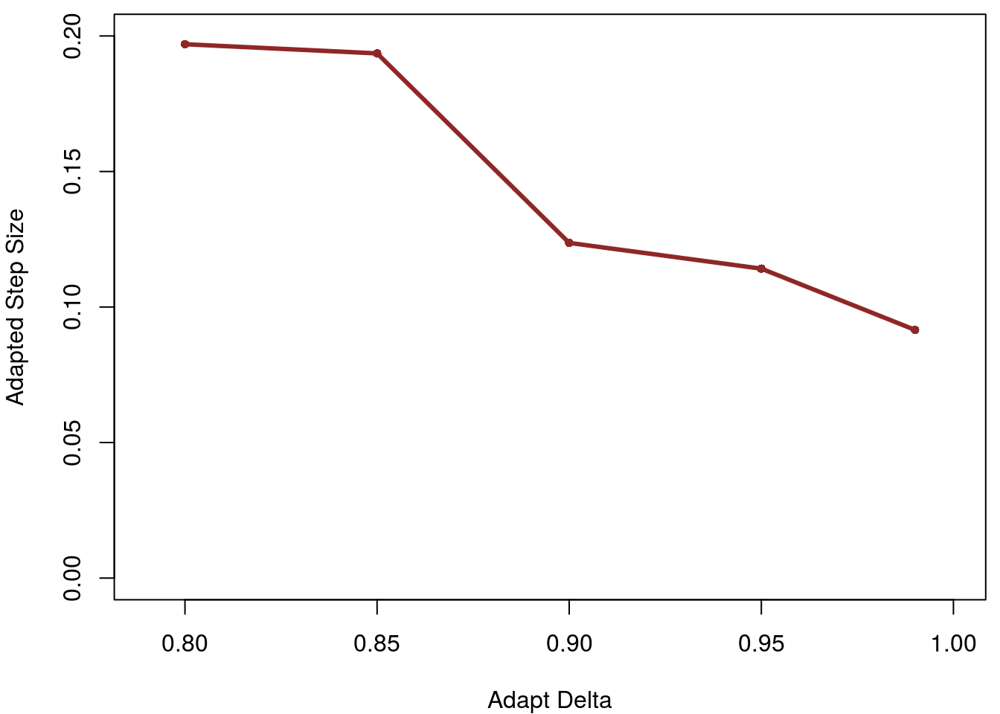
the number of divergent transitions remains nearly constant,
div_scan=c(sum(params_cp80$divergent),
sum(get_sampler_params(fit_cp85, inc_warmup=FALSE)[[1]][,'divergent__']),
sum(get_sampler_params(fit_cp90, inc_warmup=FALSE)[[1]][,'divergent__']),
sum(get_sampler_params(fit_cp95, inc_warmup=FALSE)[[1]][,'divergent__']),
sum(get_sampler_params(fit_cp99, inc_warmup=FALSE)[[1]][,'divergent__']))
par(mar = c(4, 4, 0.5, 0.5))
plot(adapt_delta, div_scan, xlab="Adapt Delta", ylab="Number of Divergences",
xlim=c(0.79, 1.0), ylim=c(0, 400), col=c_dark, type="l", lwd=3)
points(adapt_delta, div_scan, col=c_dark, pch=16, cex=0.8)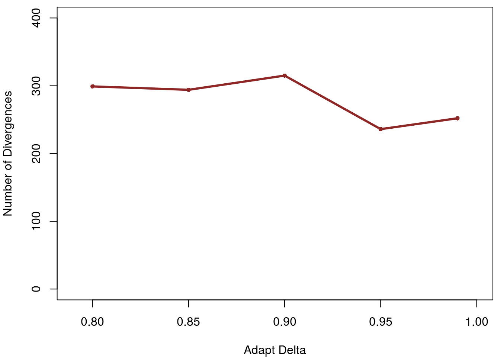
This indicates that the Hamiltonian transition is not geometrically ergodic with respect to the centered implementation of the Eight Schools model. Indeed, this is expected given the observed bias.
This behavior also has a nice geometric intuition. The more we decrease the step size the more the Hamiltonian Markov chain can explore the neck of the funnel. Consequently, the marginal posterior distribution for \(\log \tau\) stretches further and further towards negative values with the decreasing step size,
common_breaks=14 * (0:60) / 60 - 9.5
p_cp80 <- hist(log(extract(fit_cp80)$tau), breaks=common_breaks, plot=FALSE)
p_cp90 <- hist(log(extract(fit_cp90)$tau), breaks=common_breaks, plot=FALSE)
p_cp99 <- hist(log(extract(fit_cp99)$tau), breaks=common_breaks, plot=FALSE)
par(mar = c(4, 4, 0.5, 0.5))
plot(p_cp99, col=c_dark, main="", xlab="log(tau)", yaxt='n', ann=FALSE)
plot(p_cp90, col=c_mid, add=T)
plot(p_cp80, col=c_light, add=T)
legend("topleft",
c("Centered, delta=0.80", "Centered, delta=0.90", "Centered, delta=0.99"),
fill=c(c_light, c_mid, c_dark), bty="n")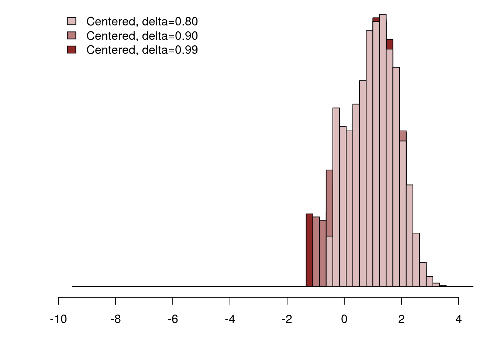
The deeper into the funnel we explore, however, the more highly-curved and pathological it becomes. The chain with the largest adapt_delta pushes deeper into the neck of the funnel but still ends up diverging once it probes too far,
params_cp99 <- as.data.frame(extract(fit_cp99, permuted=FALSE))
names(params_cp99) <- gsub("chain:1.", "", names(params_cp99), fixed = TRUE)
names(params_cp99) <- gsub("[", ".", names(params_cp99), fixed = TRUE)
names(params_cp99) <- gsub("]", "", names(params_cp99), fixed = TRUE)
divergent <- get_sampler_params(fit_cp99, inc_warmup=FALSE)[[1]][,'divergent__']
params_cp99$divergent <- divergent
div_params_cp99 <- params_cp99[params_cp99$divergent == 1,]
nondiv_params_cp99 <- params_cp99[params_cp99$divergent == 0,]
par(mar = c(4, 4, 0.5, 0.5))
plot(nondiv_params_cp99$theta.1, log(nondiv_params_cp99$tau),
xlab="theta.1", ylab="log(tau)", xlim=c(-20, 50), ylim=c(-6,4),
col=c_dark, pch=16, cex=0.8)
points(div_params_cp99$theta.1, log(div_params_cp99$tau),
col="green", pch=16, cex=0.8)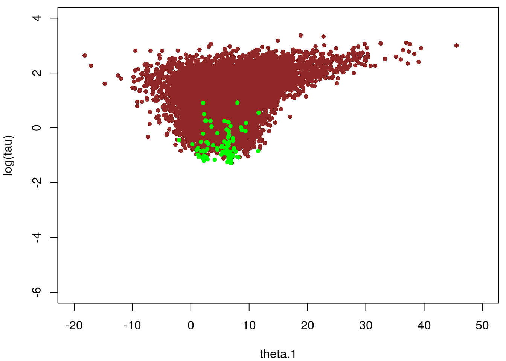
The improved exploration is evident when comparing the samples, here without labeling the divergences, from the chain with the default settings and the the adapt_delta=0.99 chain,
par(mar = c(4, 4, 0.5, 0.5))
plot(params_cp99$theta.1, log(params_cp99$tau),
xlab="theta.1", ylab="log(tau)", xlim=c(-20, 50), ylim=c(-6,4),
col=c_dark, pch=16, cex=0.8)
points(params_cp80$theta.1, log(params_cp80$tau), col=c_light, pch=16, cex=0.8)
legend("bottomright", c("Centered, delta=0.80", "Centered, delta=0.99"),
fill=c(c_light, c_dark), border="white", bty="n")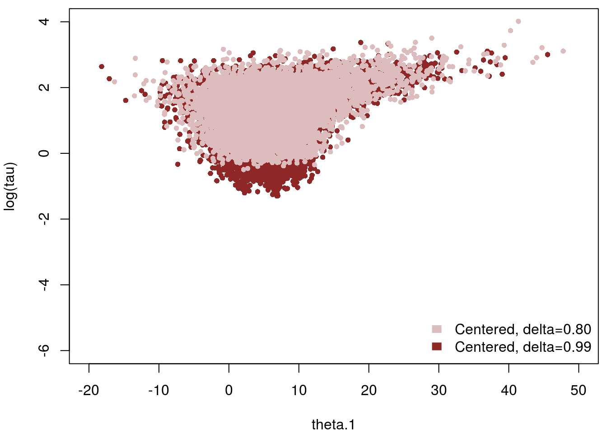
That said, the improved exploration given by decreasing the step size does not realize geometric ergodicity. While the bias does decrease with decreasing step size,
params_cp90 <- as.data.frame(extract(fit_cp90, permuted=FALSE))
names(params_cp90) <- gsub("chain:1.", "", names(params_cp90), fixed = TRUE)
names(params_cp90) <- gsub("[", ".", names(params_cp90), fixed = TRUE)
names(params_cp90) <- gsub("]", "", names(params_cp90), fixed = TRUE)
running_means_cp90 <- sapply(1:1000, function(n) mean(log(params_cp90$tau)[1:(10*n)]))
running_means_cp99 <- sapply(1:1000, function(n) mean(log(params_cp99$tau)[1:(10*n)]))
plot(10*(1:1000), running_means_cp80, col=c_light, pch=16, cex=0.8, ylim=c(0, 2),
xlab="Iteration", ylab="MCMC mean of log(tau)")
points(10*(1:1000), running_means_cp90, col=c_mid, pch=16, cex=0.8)
points(10*(1:1000), running_means_cp99, col=c_dark, pch=16, cex=0.8)
abline(h=0.7657852, col="grey", lty="dashed", lwd=3)
legend("bottomright",
c("Centered, delta=0.80", "Centered, delta=0.90", "Centered, delta=0.99"),
fill=c(c_light, c_mid, c_dark), border="white", bty="n")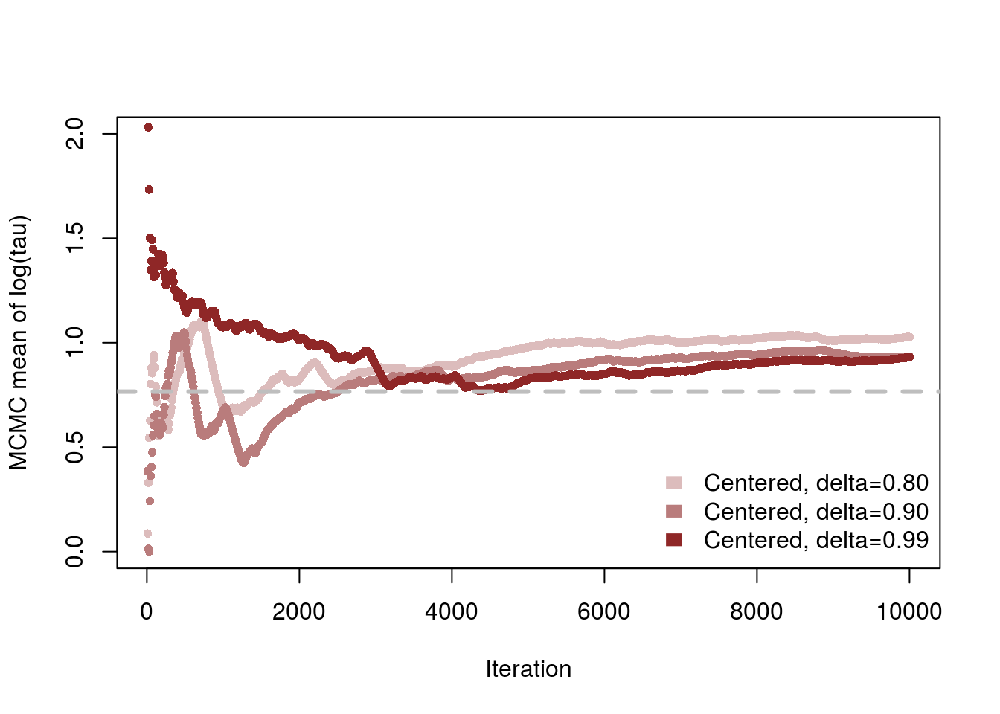
it never completely vanishes, even for the extreme setting of adapt_delta=0.99.
A Non-Centered Eight Schools Implementation
Although reducing the step size improves exploration, ultimately it only reveals the true extent the pathology in the centered implementation. Fortunately, there is another way to implement hierarchical models that does not suffer from the same pathologies.
In a non-centered parameterization we do not try to fit the group-level parameters directly, rather we fit a latent Gaussian variable from which we can recover the group-level parameters with a scaling and a translation,
\[\mu \sim \mathcal{N}(0, 5)\]
\[\tau \sim \text{Half-Cauchy}(0, 5)\]
\[\tilde{\theta}_{n} \sim \mathcal{N}(0, 1)\]
\[\theta_{n} = \mu + \tau \cdot \tilde{\theta}_{n}.\]
Because we are actively sampling from different parameters, we should expect, and indeed observe, a very different posterior distribution.
The Stan program for the non-centered parameterization is almost as simple as that for the centered parameterization,
writeLines(readLines("eight_schools_ncp.stan"))data {
int<lower=0> J;
real y[J];
real<lower=0> sigma[J];
}
parameters {
real mu;
real<lower=0> tau;
real theta_tilde[J];
}
transformed parameters {
real theta[J];
for (j in 1:J)
theta[j] = mu + tau * theta_tilde[j];
}
model {
mu ~ normal(0, 5);
tau ~ cauchy(0, 5);
theta_tilde ~ normal(0, 1);
y ~ normal(theta, sigma);
}Running the new model in Stan,
fit_ncp80 <- stan(file='eight_schools_ncp.stan', data=input_data,
iter=11000, warmup=1000, chains=1, seed=483892929,
refresh=11000)
SAMPLING FOR MODEL 'eight_schools_ncp' NOW (CHAIN 1).
Gradient evaluation took 6e-06 seconds
1000 transitions using 10 leapfrog steps per transition would take 0.06 seconds.
Adjust your expectations accordingly!
Iteration: 1 / 11000 [ 0%] (Warmup)
Iteration: 1001 / 11000 [ 9%] (Sampling)
Iteration: 11000 / 11000 [100%] (Sampling)
Elapsed Time: 0.030725 seconds (Warm-up)
0.330795 seconds (Sampling)
0.36152 seconds (Total)we see that the effective sample size per iteration has drastically improved,
print(fit_ncp80)Inference for Stan model: eight_schools_ncp.
1 chains, each with iter=11000; warmup=1000; thin=1;
post-warmup draws per chain=10000, total post-warmup draws=10000.
mean se_mean sd 2.5% 25% 50% 75% 97.5% n_eff
mu 4.44 0.04 3.35 -2.21 2.17 4.47 6.71 10.88 7618
tau 3.58 0.04 3.18 0.12 1.23 2.76 5.00 11.80 7007
theta_tilde[1] 0.31 0.01 0.97 -1.61 -0.34 0.31 0.95 2.21 10000
theta_tilde[2] 0.11 0.01 0.95 -1.81 -0.52 0.12 0.74 1.98 10000
theta_tilde[3] -0.08 0.01 0.97 -1.99 -0.73 -0.09 0.59 1.81 10000
theta_tilde[4] 0.06 0.01 0.94 -1.77 -0.57 0.06 0.69 1.88 10000
theta_tilde[5] -0.16 0.01 0.94 -2.01 -0.79 -0.16 0.47 1.67 9512
theta_tilde[6] -0.09 0.01 0.91 -1.86 -0.69 -0.10 0.53 1.69 10000
theta_tilde[7] 0.35 0.01 0.96 -1.61 -0.29 0.38 1.00 2.17 8492
theta_tilde[8] 0.06 0.01 1.00 -1.90 -0.61 0.06 0.74 2.01 9300
theta[1] 6.20 0.06 5.56 -3.28 2.77 5.67 8.94 19.18 9280
theta[2] 5.03 0.05 4.73 -4.31 2.13 5.00 7.81 14.69 10000
theta[3] 3.97 0.06 5.27 -7.67 1.10 4.27 7.15 13.63 9052
theta[4] 4.77 0.05 4.78 -4.78 1.85 4.79 7.63 14.54 10000
theta[5] 3.63 0.05 4.72 -6.78 0.89 3.87 6.78 12.10 10000
theta[6] 4.02 0.05 4.85 -6.77 1.26 4.29 7.06 12.91 10000
theta[7] 6.25 0.05 5.04 -2.49 2.98 5.85 8.97 18.15 10000
theta[8] 4.84 0.06 5.54 -6.41 1.72 4.81 7.78 16.15 8291
lp__ -6.97 0.04 2.38 -12.53 -8.31 -6.63 -5.24 -3.35 4246
Rhat
mu 1
tau 1
theta_tilde[1] 1
theta_tilde[2] 1
theta_tilde[3] 1
theta_tilde[4] 1
theta_tilde[5] 1
theta_tilde[6] 1
theta_tilde[7] 1
theta_tilde[8] 1
theta[1] 1
theta[2] 1
theta[3] 1
theta[4] 1
theta[5] 1
theta[6] 1
theta[7] 1
theta[8] 1
lp__ 1
Samples were drawn using NUTS(diag_e) at Tue Jun 27 21:53:06 2017.
For each parameter, n_eff is a crude measure of effective sample size,
and Rhat is the potential scale reduction factor on split chains (at
convergence, Rhat=1).and the trace plots no longer show any “stickyness”,
params_ncp80 <- as.data.frame(extract(fit_ncp80, permuted=FALSE))
names(params_ncp80) <- gsub("chain:1.", "", names(params_ncp80), fixed = TRUE)
names(params_ncp80) <- gsub("[", ".", names(params_ncp80), fixed = TRUE)
names(params_ncp80) <- gsub("]", "", names(params_ncp80), fixed = TRUE)
params_ncp80$iter <- 1:10000
par(mar = c(4, 4, 0.5, 0.5))
plot(params_ncp80$iter, log(params_ncp80$tau), col=c_dark, pch=16, cex=0.8,
xlab="Iteration", ylab="log(tau)", ylim=c(-6, 4))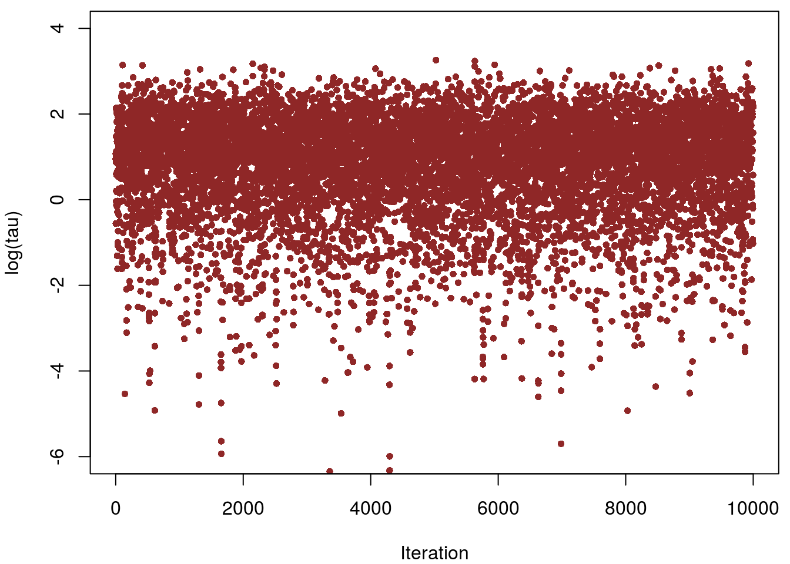
We do, however, we do still see the rare divergence,
divergent <- get_sampler_params(fit_ncp80, inc_warmup=FALSE)[[1]][,'divergent__']
sum(divergent)[1] 0sum(divergent) / 10000[1] 0These infrequent divergences do not seem concentrate anywhere in parameter space,
divergent <- get_sampler_params(fit_ncp80, inc_warmup=FALSE)[[1]][,'divergent__']
params_ncp80$divergent <- divergent
div_params_ncp <- params_ncp80[params_ncp80$divergent == 1,]
nondiv_params_ncp <- params_ncp80[params_ncp80$divergent == 0,]
par(mar = c(4, 4, 0.5, 0.5))
plot(nondiv_params_ncp$theta.1, log(nondiv_params_ncp$tau),
xlab="theta.1", ylab="log(tau)", xlim=c(-20, 50), ylim=c(-6,4),
col=c_dark, pch=16, cex=0.8)
points(div_params_ncp$theta.1, log(div_params_ncp$tau),
col="green", pch=16, cex=0.8)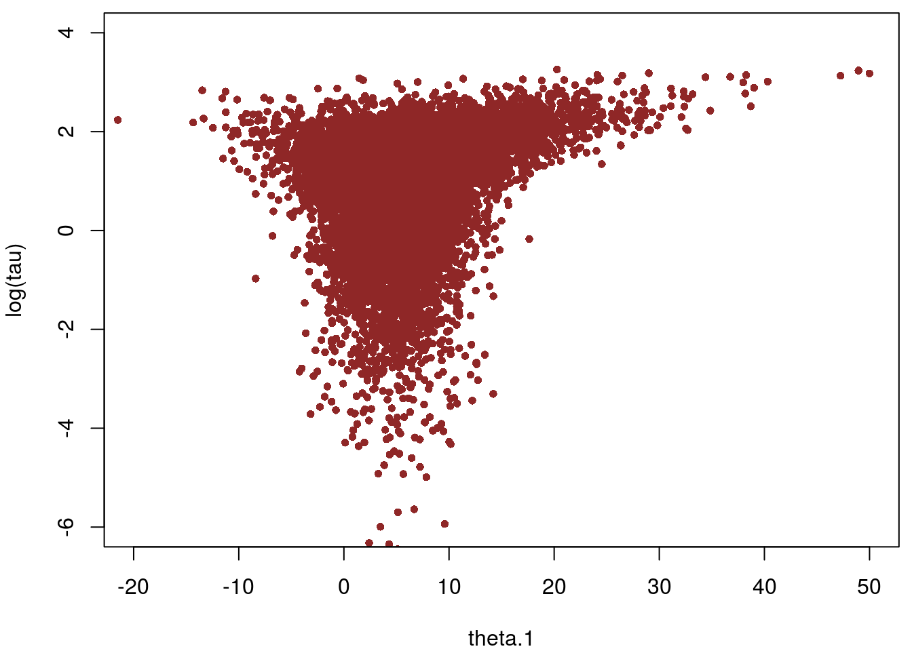
which is indicative of the divergences being false positives. As expected of false positives, we can remove the divergences entirely by decreasing the step size,
fit_ncp90 <- stan(file='eight_schools_ncp.stan', data=input_data,
iter=11000, warmup=1000, chains=1, seed=483892929,
refresh=11000, control=list(adapt_delta=0.90))
SAMPLING FOR MODEL 'eight_schools_ncp' NOW (CHAIN 1).
Gradient evaluation took 5e-06 seconds
1000 transitions using 10 leapfrog steps per transition would take 0.05 seconds.
Adjust your expectations accordingly!
Iteration: 1 / 11000 [ 0%] (Warmup)
Iteration: 1001 / 11000 [ 9%] (Sampling)
Iteration: 11000 / 11000 [100%] (Sampling)
Elapsed Time: 0.03765 seconds (Warm-up)
0.408745 seconds (Sampling)
0.446395 seconds (Total)divergent <- get_sampler_params(fit_ncp90, inc_warmup=FALSE)[[1]][,'divergent__']
sum(divergent)[1] 0The more agreeable geometry of the non-centered implementation allows the Markov chain to explore deep into the neck of the funnel, capturing even the smallest values of \(\tau\) that are consistent with the measurements,
params_ncp90 <- as.data.frame(extract(fit_ncp90, permuted=FALSE))
names(params_ncp90) <- gsub("chain:1.", "", names(params_ncp90), fixed = TRUE)
names(params_ncp90) <- gsub("[", ".", names(params_ncp90), fixed = TRUE)
names(params_ncp90) <- gsub("]", "", names(params_ncp90), fixed = TRUE)
par(mar = c(4, 4, 0.5, 0.5))
plot(params_ncp90$theta.1, log(params_ncp90$tau),
xlab="theta.1", ylab="log(tau)", xlim=c(-20, 50), ylim=c(-6,4),
col=c_dark_highlight, pch=16, cex=0.8)
points(params_cp99$theta.1, log(params_cp99$tau), col=c_dark, pch=16, cex=0.8)
points(params_cp90$theta.1, log(params_cp90$tau), col=c_mid, pch=16, cex=0.8)
legend("bottomright", c("Centered, delta=0.90", "Centered, delta=0.99",
"Non-Centered, delta=0.90"),
fill=c(c_mid, c_dark, c_dark_highlight), border="white", bty="n")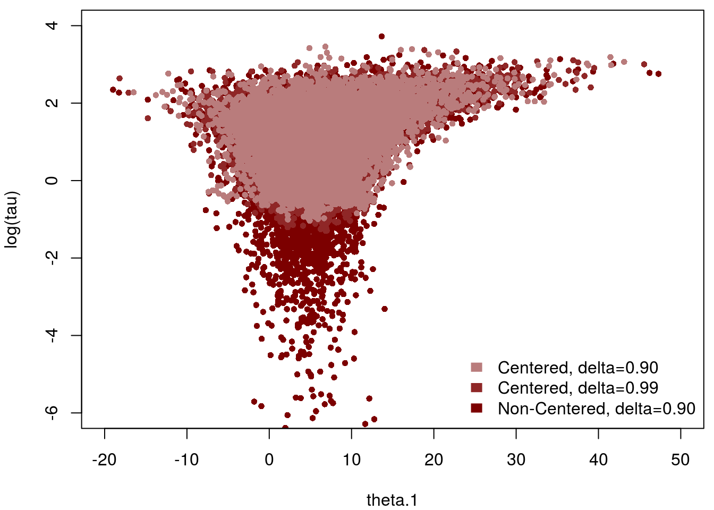
p_ncp90 <- hist(log(params_ncp90$tau), breaks=common_breaks, plot=FALSE)
par(mar = c(4, 4, 0.5, 0.5))
plot(p_ncp90, col=c_dark_highlight, main="", xlab="log(tau)", yaxt='n', ann=FALSE)
plot(p_cp99, col=c_dark, add=T)
plot(p_cp90, col=c_mid, add=T)
legend("topleft", c("Centered, delta=0.90", "Centered, delta=0.99",
"Non-Centered, delta=0.90"),
fill=c(c_mid, c_dark, c_dark_highlight), bty="n")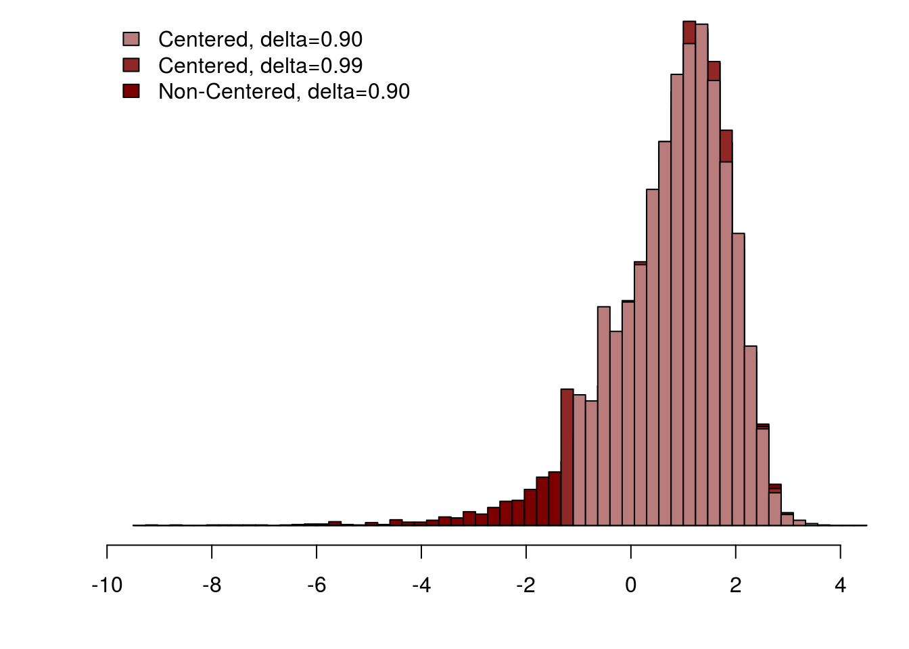
Consequently, MCMC estimators from the non-centered chain rapidly converge towards their true expectation values,
running_means_ncp <- sapply(1:1000, function(n) mean(log(params_ncp90$tau)[1:(10*n)]))
par(mar = c(4, 4, 0.5, 0.5))
plot(10*(1:1000), running_means_cp90, col=c_mid, pch=16, cex=0.8, ylim=c(0, 2),
xlab="Iteration", ylab="MCMC mean of log(tau)")
points(10*(1:1000), running_means_cp99, col=c_dark, pch=16, cex=0.8)
points(10*(1:1000), running_means_ncp, col=c_dark_highlight, pch=16, cex=0.8)
abline(h=0.7657852, col="grey", lty="dashed", lwd=3)
legend("bottomright", c("Centered, delta=0.90", "Centered, delta=0.99",
"Non-Centered, delta=0.90"),
fill=c(c_mid, c_dark, c_dark_highlight), border="white", bty="n")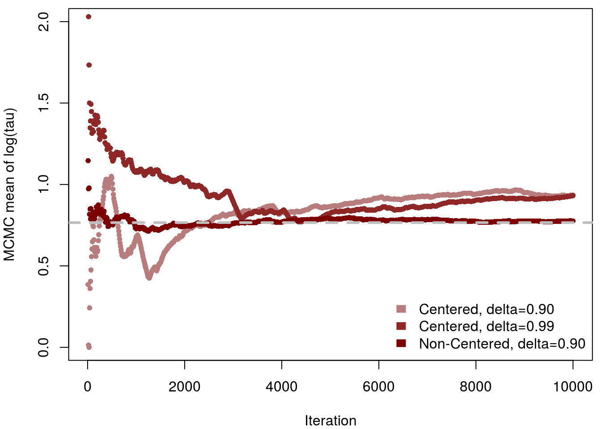
Why wasn’t Biased Estimation Previously Identified?
We have seen in these examples that hierarchical models implemented with a centered parameterization impede the geometric ergodicity of Hamiltonian Monte Carlo, at least when the data are not extremely informative. The ultimate importance of the resulting bias, however, depends on the specific application.
If we are interested in the behavior of \(\log \tau\) then this bias will be serious and affect the quality of any inferences drawn from the fit. Often, however, one is interested not in the behavior of \(\log \tau\) but rather the behavior of \(\tau\). When we transform from the logarithmic scale to the linear scale the pathological region of the posterior is compressed into a small volume and the biases are somewhat mediated,
breaks=20 * (0:50) / 50
p_cp <- hist(params_cp90$tau[params_cp90$tau < 20], breaks=breaks, plot=FALSE)
p_ncp <- hist(params_ncp90$tau[params_ncp90$tau < 20], breaks=breaks, plot=FALSE)
par(mar = c(4, 4, 0.5, 0.5))
plot(p_ncp, col=c_dark_highlight, main="", xlab="tau",
yaxt='n', ann=FALSE, ylim=c(0, 1000))
plot(p_cp, col=c_mid, add=T)
legend("topright", c("Centered, delta=0.90", "Non-Centered, delta=0.90"),
fill=c(c_mid, c_dark_highlight), bty="n")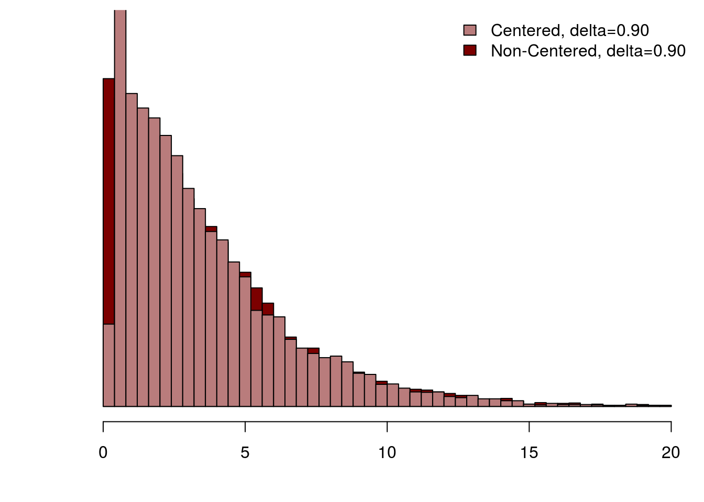
running_means_cp <- sapply(1:1000, function(n) mean(params_cp90$tau[1:(10*n)]))
running_means_ncp <- sapply(1:1000, function(n) mean(params_ncp90$tau[1:(10*n)]))
par(mar = c(4, 4, 0.5, 0.5))
plot(10*(1:1000), running_means_cp, col=c_mid, pch=16, cex=0.8, ylim=c(2, 4.25),
xlab="Iteration", ylab="MCMC mean of tau")
points(10*(1:1000), running_means_ncp, col=c_dark_highlight, pch=16, cex=0.8)
abline(h=3.575019, col="grey", lty="dashed", lwd=3)
legend("bottomright", c("Centered, delta=0.90", "Non-Centered, delta=0.90"),
fill=c(c_mid, c_dark_highlight), border="white", bty="n")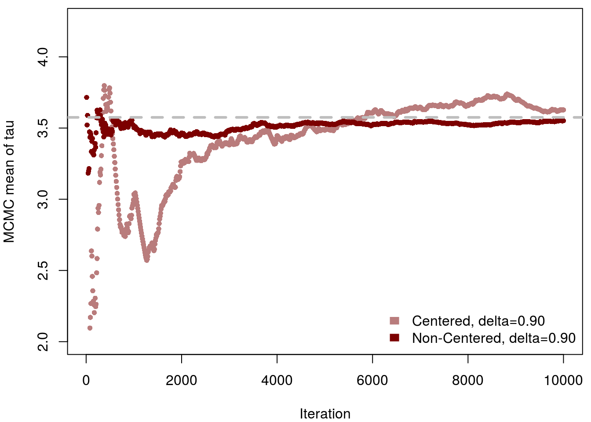
Certainly the bias is not as obvious as it was on the logarithmic scale.
This mediation also affects how the bias propagates to other parameters in the model. When we average over both \(\mu\) and \(\tau\), the small bias of \(\tau\) actually compels the marginal posterior for the group-level parameters to be narrower than they should be,
breaks=80 * (0:50) / 50 - 25
p_cp <- hist(params_cp90$theta.1, breaks=breaks, plot=FALSE)
p_ncp <- hist(params_ncp90$theta.1, breaks=breaks, plot=FALSE)
par(mar = c(4, 4, 0.5, 0.5))
plot(p_ncp, col=c_dark_highlight, main="", xlab="theta.1", yaxt='n', ann=FALSE)
plot(p_cp, col=c_mid, add=T)
legend("topright", c("Centered, delta=0.90", "Non-Centered, delta=0.90"),
fill=c(c_mid, c_dark_highlight), bty="n")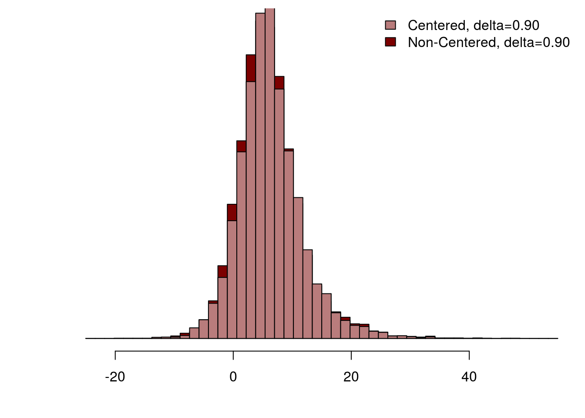
This narrowness does not strongly affect the accuracy of the mean of the group-level parameters,
running_means_cp <- sapply(1:1000, function(n) mean(params_cp90$theta.1[1:(10*n)]))
running_means_ncp <- sapply(1:1000, function(n) mean(params_ncp90$theta.1[1:(10*n)]))
par(mar = c(4, 4, 0.5, 0.5))
plot(10*(1:1000), running_means_cp, col=c_mid, pch=16, cex=0.8, ylim=c(4, 7),
xlab="Iteration", ylab="MCMC mean of theta.1")
points(10*(1:1000), running_means_ncp, col=c_dark_highlight, pch=16, cex=0.8)
abline(h=6.250004, col="grey", lty="dashed", lwd=3)
legend("bottomright", c("Centered, delta=0.90", "Non-Centered, delta=0.90"),
fill=c(c_mid, c_dark_highlight), border="white", bty="n")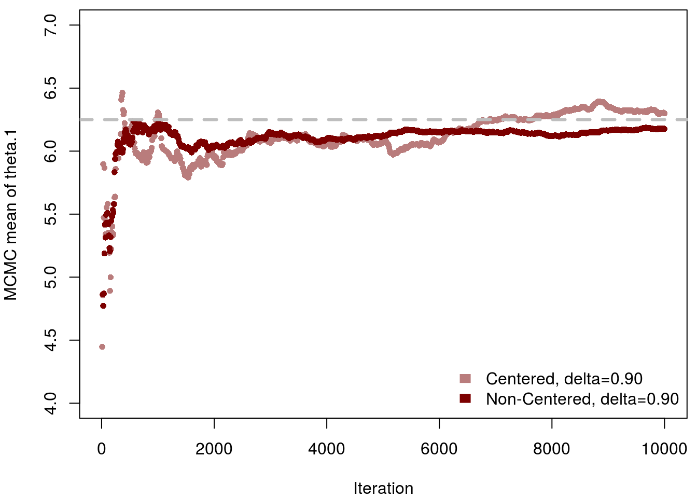
but it does systematically underestimate the variance for many iterations,
running_means_cp <- sapply(1:1000, function(n) var(params_cp90$theta.1[1:(10*n)]))
running_means_ncp <- sapply(1:1000, function(n) var(params_ncp90$theta.1[1:(10*n)]))
par(mar = c(4, 4, 0.5, 0.5))
plot(10*(1:1000), running_means_cp, col=c_mid, pch=16, cex=0.8, ylim=c(10, 40),
xlab="Iteration", ylab="MCMC variance of theta.1")
points(10*(1:1000), running_means_ncp, col=c_dark_highlight, pch=16, cex=0.8)
abline(h=29.78573, col="grey", lty="dashed", lwd=3)
legend("bottomright", c("Centered, delta=0.90", "Non-Centered, delta=0.90"),
fill=c(c_mid, c_dark_highlight), border="white", bty="n")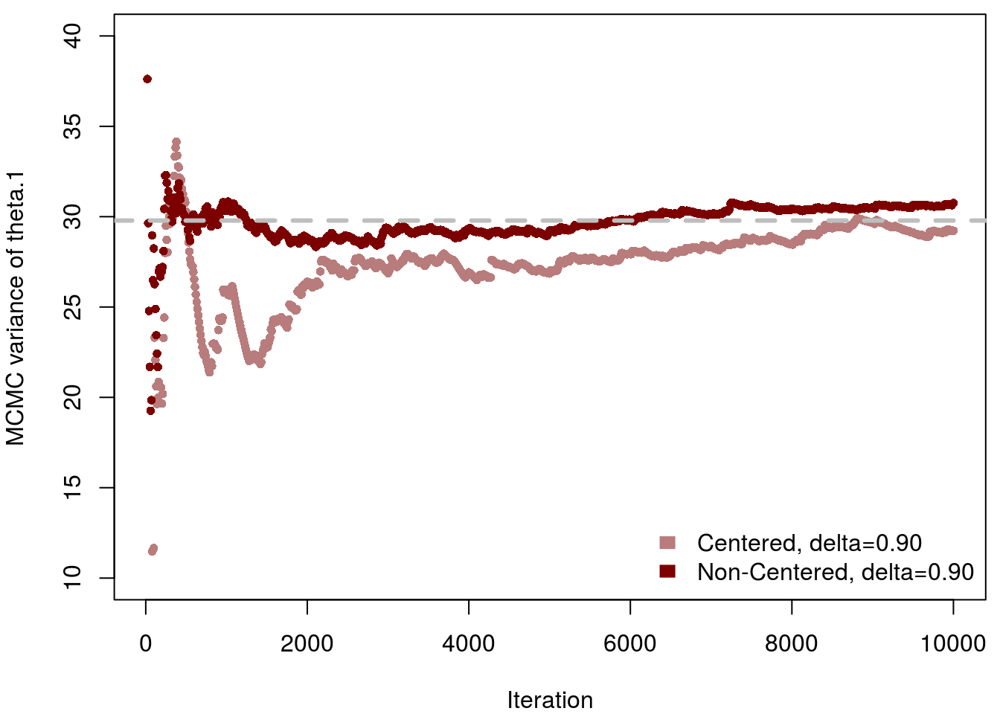
In practice this bias can be hard to observe if the Markov chain is slow and the MCMC estimators are noisy, as is common when using older MCMC algorithms like Random Walk Metropolis and Gibbs samplers. This may help explain why the lack of geometric ergodicity in centered implementations of hierarchical models is so often overlooked in practice.
Ultimately, identifying the breakdown of geometric ergodicity for a given Markov transition and target distribution indicates only that there is a bias, not how significant that bias will be. The precise significance of this bias depends not only on the structure of the model but also on the details of how inferences from that model will be applied. Sometimes an analysis taking these factors into account can quantify the significance of the bias and potentially deem it acceptable. These analyses, however, are extremely subtle, challenging, and time-consuming. It is almost always easier to modify the model to restore geometric ergodicity and unbiased MCMC estimation.
Conclusion
Divergences are an incredibly sensitive diagnostic for the breakdown of geometric ergodicity and hence critical guidance for best implementing our models in practice. If the divergences can be removed by increasing adapt_delta then Hamiltonian Monte Carlo applied to the given implementation will yield accurate inferences. If the divergences persist, however, then the model will need to be reimplemented to avoid biases.
Acknowledgements
I thank Bob Carpenter for many helpful comments.
Original Computing Environment
writeLines(readLines(file.path(Sys.getenv("HOME"), ".R/Makevars")))#CFLAGS = -O3 -Wall -pipe -pedantic -std=gnu99 -march=native
#CXXFLAGS = -O3 -Wall -pipe -Wno-unused -pedantic -march=native devtools::session_info("rstan")Session info -------------------------------------------------------------- setting value
version R version 3.3.3 (2017-03-06)
system x86_64, linux-gnu
ui X11
language (EN)
collate en_US.UTF-8
tz America/Los_Angeles
date 2017-06-27 Packages ------------------------------------------------------------------ package * version date source
assertthat 0.1 2013-12-06 CRAN (R 3.3.0)
BH 1.62.0-1 2016-11-19 CRAN (R 3.3.3)
colorspace 1.2-6 2015-03-11 CRAN (R 3.3.0)
dichromat 2.0-0 2013-01-24 CRAN (R 3.3.0)
digest 0.6.11 2017-01-03 CRAN (R 3.3.2)
ggplot2 * 2.2.1 2016-12-30 CRAN (R 3.3.2)
gridExtra 2.2.1 2016-02-29 CRAN (R 3.3.0)
gtable 0.2.0 2016-02-26 CRAN (R 3.3.0)
inline 0.3.14 2015-04-13 CRAN (R 3.3.3)
labeling 0.3 2014-08-23 CRAN (R 3.3.0)
lattice 0.20-34 2016-09-06 CRAN (R 3.3.1)
lazyeval 0.2.0 2016-06-12 CRAN (R 3.3.0)
magrittr 1.5 2014-11-22 CRAN (R 3.3.0)
MASS 7.3-45 2015-11-10 CRAN (R 3.2.5)
Matrix 1.2-8 2017-01-20 CRAN (R 3.3.2)
munsell 0.4.3 2016-02-13 CRAN (R 3.3.0)
plyr 1.8.4 2016-06-08 CRAN (R 3.3.0)
RColorBrewer 1.1-2 2014-12-07 CRAN (R 3.3.0)
Rcpp 0.12.11 2017-05-22 CRAN (R 3.3.3)
RcppEigen 0.3.3.3.0 2017-05-01 CRAN (R 3.3.3)
reshape2 1.4.1 2014-12-06 CRAN (R 3.3.0)
rlang 0.1.1 2017-05-18 CRAN (R 3.3.3)
rstan * 2.15.1 2017-04-19 CRAN (R 3.3.3)
scales 0.4.1 2016-11-09 CRAN (R 3.3.2)
StanHeaders * 2.15.0-1 2017-04-19 CRAN (R 3.3.3)
stringi 1.1.1 2016-05-27 CRAN (R 3.3.0)
stringr 1.1.0 2016-08-19 CRAN (R 3.3.0)
tibble 1.3.1 2017-05-17 CRAN (R 3.3.3)References
Betancourt, Michael, and Mark Girolami. 2015. “Hamiltonian Monte Carlo for Hierarchical Models.” In Current Trends in Bayesian Methodology with Applications, edited by Umesh Singh Dipak K. Dey and A. Loganathan. Chapman & Hall/CRC Press.
Rubin, Donald B. 1981. “Estimation in Parallel Randomized Experiments.” Journal of Educational and Behavioral Statistics 6 (4): 377–401.